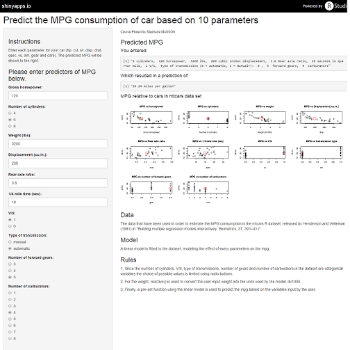

Nowadays we are facing an unprecedented environmental crisis. The ever growing consumption of fossil fuels puts earth and humanity at risk. In fact, most scientificts are concerned that if we keep on our current way of life will emit too much greenhouse gazes (CO2, NOx, CH4 etc.), going beyond a 2 Celsius degree temperature raise changing earth environment for ever.
Car emissions are a big part of those emission and fossil fuel consumption. Studies have shown that they account for 15% of the overall pollution (4th cause of air pollution) and 34% of oil consumption (1st cause of oil consumption). As a consequence, we have high insentive to be aware of the potential environmental damage made by our main way of transportation.
This application aims to provide some information to help people choose the most efficient cars regarding fuel consumption (and by extension pollution emission) based on 10 factors:
The data that have been used in order to estimate the MPG consumption is the mtcars R dataset, released by Henderson and Velleman (1981) in "Building multiple regression models interactively. Biometrics, 37, 391-411".
By the look of the plots, it seems that in average (red point) manual transmission cars have a better performance regarding fuel consumption (in average mpg is smaller for automatic cars than for manual cars). This was confirmed by a t-test in order to statistically reject this hypothesis.
## Analysis of Variance Table
##
## Model 1: mpg ~ factor(am)
## Model 2: mpg ~ factor(am) + wt
## Model 3: mpg ~ factor(am) + wt + hp
## Model 4: mpg ~ factor(am) + wt + hp + cyl + gear + disp + drat + qsec +
## vs + carb
## Res.Df RSS Df Sum of Sq F Pr(>F)
## 1 30 720.90
## 2 29 278.32 1 442.58 63.0133 9.325e-08 ***
## 3 28 180.29 1 98.03 13.9571 0.001219 **
## 4 21 147.49 7 32.80 0.6671 0.697259
## ---
## Signif. codes: 0 '***' 0.001 '**' 0.01 '*' 0.05 '.' 0.1 ' ' 1
The anova test shows that wt and hp are the two other most significant variables impacting the MPG.
R² for a model with the type of transmission, weigth and gross horsepower as predictors is 0.8398903, which mean that 84% variance in MPG is explained by this three parameters.
However for our application we have choose to use all the available parameters in order to enable people to make the most enlightned choice of car possible.
